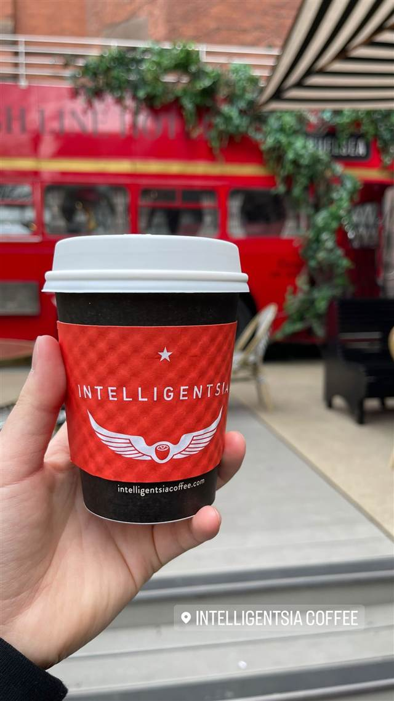

Intelligentsia Coffee (High Line)
生産農家と直接価格交渉するダイレクトトレードを広めたロースター
INTELLIGENTSIA COFFEE
1995年にシカゴで創業した、アメリカのサードウェーブコーヒーを代表するロースター。生産農家と直接価格交渉する「ダイレクトトレード」を業界に先駆けて広め、2013年にニューヨーク1号店をハイライン・ホテル内に開いた。
TRIVIA
へえ、という話
- 2015年に大手ピーツコーヒー（Peet's Coffee、JABホールディングス傘下）が過半数株式を取得した
REVIEWS
みんなの声
4.5Googleマップ
「上品な店内とマキアートの評判」に注目
- 上品な店内と親切で丁寧なスタッフの対応を評価する声が非常に多い
- マキアートの味やバルタザール提供の焼き菓子を評価する声がある
- 他のカフェと比べコーヒーの温度がぬるく値段も高めに感じるという声がある
Yelp 口コミ246件
| 創業 | 1995年、シカゴでダグ・ゼル（Doug Zell）とエミリー・マンジュ（Emily Mange）が創業。 |
|---|---|
| 系譜 | アメリカにおける「サードウェーブコーヒー」の代表格とされる焙煎・カフェチェーン。2013年にニューヨーク初出店として「ザ・ハイライン・ホテル」内に出店した。 |
| 看板 | シングルオリジンのスペシャルティコーヒー。 |
| こだわり | 生産国に直接出向き、農家と関係を築いて価格交渉する「ダイレクトトレード」の仕組みを業界に先駆けて制度化したことで知られる。 |
| 場所 | 23rd St 180 10th Ave, New York, NY 10011 |
| 注意 | ハイライン（高架公園）近くのホテル内カフェ。 |
食べたもの：コーヒーカップ
NEARBY
近い店・同じ系統の店
-
 ★1
コーヒー 新宿三丁目
AALIYA COFFEE ROASTERS
37年続く本店譲りのフレンチトーストを並ばず味わえる
昼 ¥1,000～¥1,999 夜 ¥1,000～¥1,999
★1
コーヒー 新宿三丁目
AALIYA COFFEE ROASTERS
37年続く本店譲りのフレンチトーストを並ばず味わえる
昼 ¥1,000～¥1,999 夜 ¥1,000～¥1,999
-
 ★23
コーヒー 保田駅
音楽と珈琲の店 岬
小説『虹の岬の喫茶店』のモデルになった鋸山ふもとの喫茶店
昼 ～¥999
★23
コーヒー 保田駅
音楽と珈琲の店 岬
小説『虹の岬の喫茶店』のモデルになった鋸山ふもとの喫茶店
昼 ～¥999
-
 コーヒー 御成門・浜松町・大門
ル・パン・コティディアン 芝公園店
ベルギー発、1990年創業のベーカリーで東京タワー望むテラス朝食
夜 ¥3,000～¥3,999
コーヒー 御成門・浜松町・大門
ル・パン・コティディアン 芝公園店
ベルギー発、1990年創業のベーカリーで東京タワー望むテラス朝食
夜 ¥3,000～¥3,999
-
 コーヒー 中目黒・池尻大橋
スターバックス リザーブ ロースタリー東京
隈研吾設計、高さ17mの銅製焙煎機を囲む世界5番目のロースタリー
昼 ¥1,000～¥1,999 夜 ¥1,000～¥1,999
コーヒー 中目黒・池尻大橋
スターバックス リザーブ ロースタリー東京
隈研吾設計、高さ17mの銅製焙煎機を囲む世界5番目のロースタリー
昼 ¥1,000～¥1,999 夜 ¥1,000～¥1,999
-
 コーヒー 自由が丘
ONIBUS COFFEE 自由が丘店
奥沢発の人気豆、自由が丘初のカフェスタイル店でトースト
昼 ～¥999 夜 ～¥999
コーヒー 自由が丘
ONIBUS COFFEE 自由が丘店
奥沢発の人気豆、自由が丘初のカフェスタイル店でトースト
昼 ～¥999 夜 ～¥999
-
 コーヒー 桜新町駅
OGAWA COFFEE LABORATORY 桜新町
小川珈琲の新業態で楽しむコーヒーと炭火焼き料理のペアリング
昼 ¥1,000～¥1,999 夜 ¥3,000～¥3,999
コーヒー 桜新町駅
OGAWA COFFEE LABORATORY 桜新町
小川珈琲の新業態で楽しむコーヒーと炭火焼き料理のペアリング
昼 ¥1,000～¥1,999 夜 ¥3,000～¥3,999